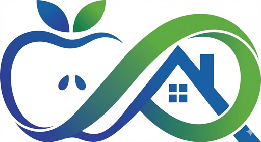

青森市・野尻。土地315万円の空き家。一見ただの資産です。
でも雪国では、これが「339万円の負債」に変わる――。
積雪が重い地域で、空き家の維持コスト（除排雪＋倒壊＋代執行・求償リスク）は地価・利回りにどれだけの「雪国ディスカウント」を生み、維持コストが資産価値を上回る限界点（デス・クロス）はどこに分布するのか。
手続きを一部省略する緊急代執行は青森県で初・青森市でも初。根拠は空家法第22条第11項（令和5年改正で新設）。出典：東奥日報／ABA青森朝日放送／青森市
この3つはいずれも下方硬直的――地価が下がっても消えない。低地価ゾーンほど、先に資産を食い破る。
「特定空家」に勧告が出た瞬間、住宅用地特例（小規模＝課税標準1/6）が外れる。野尻の例で年5,100円→21,600円、4.2倍に不連続ジャンプ。
根拠：地方税法349条の3の2／空家法22条2項（勧告）。倍率＝0.70÷(1/6)＝4.2、評価額に依らず頑健。
図3｜特例解除前後の固定資産税（評価額ベース）
図7｜青森地方気象台 年最深積雪(cm)。2022年52cmが近年突出。降雪量合計は豪雪年で600〜669cm。
屋根の雪を下ろせば年9万円。下ろさず倒壊すれば、解体費300万円が空家法22条12項＋行政代執行法で国税滞納処分の例により強制徴収――国税・地方税に次ぐ先取特権付きの確定債務。
保全コストと倒壊リスクはトレードオフ。どちらを選んでも保有者は払い続ける。
図1｜年26.2万円の維持コストが約12年で土地価値315万円を食い潰す。実勢ベースなら到達は約10年に短縮。
図8｜保有NPVウォーターフォール（賃料0・割引率4%）
| エリア | 2026地価 | 前年 | 区分 | 判定 |
|---|---|---|---|---|
| 勝田2丁目 | 64,300 | +1.4% | 市街化 | 低 |
| 弘前駅前 | 93,700 | + | 市街化 | 低 |
| 新町2丁目 | 83,000 | +1.1% | 中心商業 | 中 |
| 本町 | 57,500 | ±0 | 商業 | 中 |
| 浪岡 | 15,700 | +2.6% | 非線引 | 中 |
| 十和田 稲生町 | 30,400 | −0.7% | 鉄道空白 | 高 |
| 十和田 西十二番町 | 23,800 | −0.8% | 鉄道空白 | 高 |
| 野尻 | 16,000 | −1.2% | 調整区域 | 高 |
図4｜市街化区域の良好住宅地はプラス、市街化調整区域・郊外・鉄道空白地はマイナスに符号分離。低地価×下落の赤いゾーンがデス・クロス候補。
「代執行されなければ大丈夫」ではない。勧告の時点で税の優遇が消える。発火点は世間のイメージよりずっと手前にある。
負債化する前に動く――。あっぷる総研は、公的データだけで地域経済を解剖し続けます。
気象データ：気象庁 青森地方気象台（年最深積雪・降雪量合計）／ 地価：国土交通省 国土数値情報 地価公示 L01（2026年版・mlit-dpf API）／ 取引価格：国交省 不動産情報ライブラリ ・ 住宅・土地統計調査（令和5年）／ 法令：e-Gov 法令データ（空家等対策の推進に関する特別措置法 第22条・行政代執行法 第5〜6条・地方税法 第349条の3の2）／ 人口：青森市 総合戦略2024-2028・国立社会保障人口問題研究所 ・ 総務省 住民基本台帳人口移動報告／ 事例：東奥日報・ABA青森朝日放送・青森市 公表資料。
本レポートのデス・クロス数値モデルは、評価額＝時価の70%、年次倒壊ハザード5%、業者雪下ろし年9万円等の仮定に基づく試算であり、負担調整措置は捨象している。相関の量的検証には市別・年次の特定空家件数等が必要で、本号では機序と代表事例の提示にとどまる。
※本レポートは公的データに基づく研究であり、投資助言ではありません。